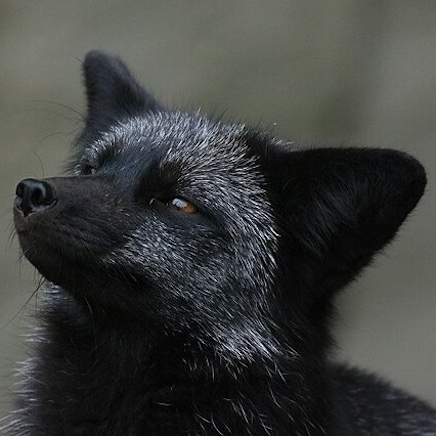

Thinking Outside The Fox
Silver Fox
The Silver fox is a variant breed of the red fox. Silver foxes are primarily black but have hairs of white and gray along their back and the upper part of their head that give them a silver appearance. They also have a white tipped tail. They vary in size quite a bit, being anywhere from 2-3 feet long. This breed is native to both North America and parts of Russia. They have very full fur and are the most often domesticated fox.
Due to the Fox Domestication experiment done by Dimitri Belyaev and Lyudmila Trut, the silver fox is one of the best breeds to have as a pet. These foxes are very dog-like and have similar behaviors to dogs. They do not smell nearly as much as any other breeds but still require similar care.